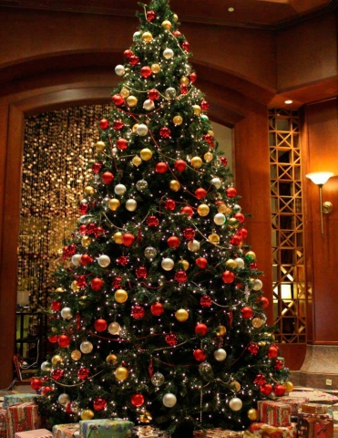

In Spain, it is customary to eat 12 grapes – one at each stroke of the clock at midnight on New Year’s Eve. Each grape represents good luck for one month of the coming year. In bigger cities like Madrid and Barcelona, people gather in main squares to eat their grapes together and pass around bottles of cava.
In hopes of a travel-filled new year, residents of Colombia carry empty suitcases around the block. That’s one New Year’s tradition we can get behind!
Residents of Denmark greet the New Year by throwing old plates and glasses against the doors of family and friends to banish bad spirits. They also stand on chairs and jump off of them together at midnight to “leap” into January in hopes of good luck.
In Finland, people predict the coming year by casting molten tin into a container of water, then interpreting the shape the metal takes after hardening. A heart or ring means a wedding, while a ship predicts travel and a pig declares there will be plenty of food.
To drive off evil spirits for a fresh New Year’s start, it is tradition to burn effigies (muñecos) of well-known people such as television characters and political figures in Panama. The effigies are meant to represent the old year.
During Scotland’s New Year’s Eve celebration of Hogmanay, “first-footing” is practiced across the country. The first person who crosses a threshold of a home in the New Year should carry a gift for luck. Scots also hold bonfire ceremonies where people parade while swinging giant fireballs on poles, supposedly symbols of the sun, to purify the coming year.
You’ll find round shapes all over the Philippines on New Year’s Eve as representatives of coins to symbolize prosperity in the coming year. Many families display piles of fruit on their dining tables and some eat exactly 12 round fruits (grapes being the most common) at midnight. Many also wear polka dots for luck.
In Brazil, as well as other Central and South America countries like Ecuador, Bolivia, and Venezuela, it is thought to be lucky to wear special underwear on New Year’s Eve. The most popular colors are red, thought to bring love in the New Year, and yellow, thought to bring money.
An onion is traditionally hung on the front door of homes on New Year’s Even in Greece as a symbol of rebirth in the New Year. On New Year’s Day, parents wake their children by tapping them on the head with the onion.
OKAY Project
Poland
okaypavel.pl@gmail.com
Pupil: TEB Edukacja Piotrków Trybunalski